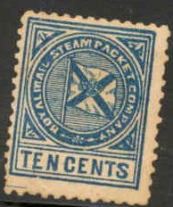
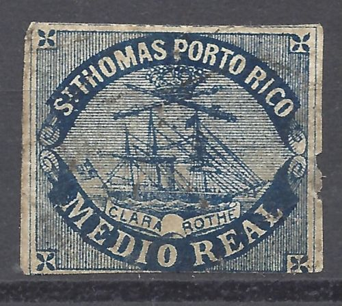
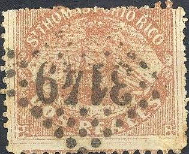
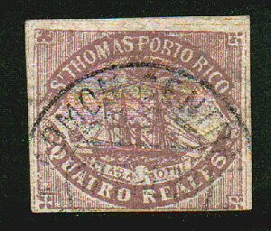
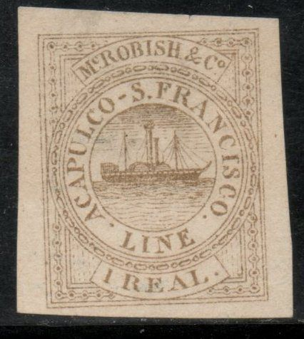
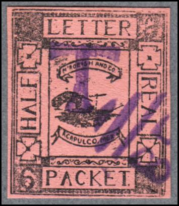
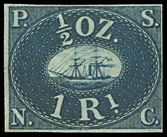
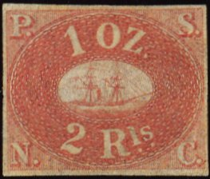
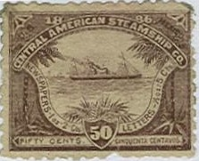
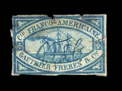

Return To Catalogue - San Tomas La Guaira, part 1 - La Guaira, Jesurun issue - Danube (Donau) Steam Ship Company
Note: on my website many of the
pictures can not be seen! They are of course present in the
catalogue;
contact me if you want to purchase the catalogue.
'The private ship letter stamps of the world Part 1 The Caribbean' by S.Ringstrom and H.E. Tester (1976?). Includes information about the forgeries, reprints, cancels etc.
10 c red
Value of the stamps |
|||
vc = very common c = common * = not so common ** = uncommon |
*** = very uncommon R = rare RR = very rare RRR = extremely rare |
||
| Value | Unused | Used | Remarks |
| 10 c | RR | RR | |
The Royal Mail Steam Packet Company served the following ports in the Caribean: Curacao, Surinam, San Domingo, Porto Plato and Porto Cabello. The genuine stamp is perforated 12.5. I've seen a full sheet of 30 stamps (5 rows of 6 stamps). From the red stamp only two copies used on letter are known. It seems that essays and proofs exist in black (also in slightly different design), however I have never seen these.
Two different kinds of forgeries exist, they are either perforated 11 or are imperforated and exist in the colours red and blue on thick soft paper.

The second forgery is imperforate and produced more recently (it seems to have been reproduced from a photo, sorry no picture available). Source: http://www.mystamps.net/venezuela/identificacion/RMSP.html.
On the above mentioned website information of cancelled stamps can also be found (the website is in Spanish).
(Reduced sized images)
There are nine values, perforated 10 1/2 1/2 centavo, black 1 centavo black 2 centavos black 3 centavos black 4 centavos black 1/2 real, blue 1 real red 2 reales mauve 4 reales green
These stamps exist all imperforate. The Clara Rothe really existed, but it didn't serve any mail any more when these stamps were issued. This issue is entirely a bogus issue, of which exists forgeries as well! The 'original' stamps were printed by M.Stern in Paris (source: http://www.hants.org.uk/hpf/bulletin/bulletin127jan2011.pdf). According to the same source, the company owning the Clara Rothe was owned by George Nunes & Co. See also http://elasca.eu/cara_clara_rothe.htm.

2 reales red?
The 'Almanach du Timbre-Poste' of J.B.Moens (1886), in which Moens makes fun of many dealers and stamp forgers, it is stated that 'M.Ed.Nunès, de Paris, imprime les timbres, au type ci-contre, en toutes couleurs, pour le compte d'une société d'exploration.'

This is supposedly a proof, but it doesn't resemble the
genuine design; no background lines, flag different etc. This
exact same image appears also in The Stamp Collectors Magazine of
May 1, 1869, page 72. It says there "Our illustration, we
find, is not quite correct, our engraver having' omitted the
ground of transverse lines within the oval, which may be taken to
represent the clouds."
 


Possibly Spiro forgeries, with the front mast touching the sword.
Often found with the above "VF" cancel. The crown is
placed too high in these forgeries. Also note the position of the
"R" of "ROTHE" with respect to the curve just
above it. And the ropes in front of the ship are different when
compared to a genuine stamp.
The next stamps have different colours (?), they also seem to be printed more 'roughly':
 


Possibly made by the forger Zechmeyer
of Nuremberg (Germany). "CUATRO" is written as
"QUATRO" and a bogus value "CINCO REALES" has
appeared. A 2 Reales is also shown on
http://elasca.eu/cara_clara_rothe.htm. The design is very blur.
One of the stamps has an "ADMON CENTRAL" cancel, while
others have numeral cancels "4944", "4507"
and "3149" and other bogus cancels.
Click here, for the stamps issued by the Danube (Donau) Steam Ship Company
(second type; without dot)

(third type; without wheel)
These stamps are bogus issues, there never existed an Acapulco S Francisco line. Three different designs exist, one with a dot in the propulsion wheel (values in green, blue and red). A second design with no dot in the propulsion wheel (also in colour green, blue and red, see picture above). A third type exists with no wheel at all (see picture above).

(fourth type)
I have also seen a fourth type (not mentioned anywhere as far as I know), with a sailship in the center (instead of a steamship)!
Again another forger made a fifth type:
(Fifth type)
This forgery seems to have been printed on security paper? I've seen the following values: 1/2 r black and 1 r black (both with yellow security underprint) and 5 r black (with blue security underprint). All values have a different ship in the center.

Yet another type of forgery. First image reduced size.

And again another type

Forgery in a totally different design with inscription 'HALF REAL
LETTER PACKET MCROBISH AND CO ACAPULCO MEX'. I've also seen this
forgery in the colors red on blue, red on yellow, brown on yellow
and black on yelow (all 1/2 Real).

10 c blue,black and yellow
This stamp has been listed in volume 1 more extensively (including reprints etc.).


1 Rl blue 2 Rls red
These stamps were also prepared in blue red, brown yellow and green, but never put into use. Click here for more information on these stamps and the many forgeries that exist.
I have not much information about these stamps, except that I've seen the values 1 blue, 3 lilac and 6 violet. It seems to have been issued in 1872 (other sources say 1870, but the postal authorities in St.Lucia say 1872, they should now, right?). The St.Lucia Steam Conveyance Company started a postal service but this service was terminated by government order in 1894. I don't know if the above stamps have ever been used.
The stamps of the Suez Canal Company are now listed in Volume 1 of the Cd's.
For more information on Morton shipping co, click here.


The following values exist: 1 c grey, 2 c red, 10 c blue, 50 c brown and 5 c (overprinted in spanish and english) on 1 c grey. According to 'The Private Ship Letter Stamps of the World, Part 1 The Caribbean' by S.Ringström and H.E.Tester, the remainders turned up in the philatelic market in 1891. It is not clear if these stamps were ever used (forged cancels exist though, usually on stamps with the gum still intact). If my information is correct, this issue was made by Brewster Cox Kenyon of San Francisco. This person was also responsable for some bogus Army Frank stamps of the United States.

A red and blue stamp were issued by this company in 1856. They seem to have been used on steamships carrying mail from Le Havre in France to New York and Rio de Janeiro. They are extremely rare, only 7 red stamps are known and only 2 blue stamps.
The following descriptions have been taken from
'Phantom Philately' by Frederick John Melville and the 'Priced
Catalogue of Local Postage Stamps' Part 2, compiled by E. F. Hurt
and L. N. & M. Williams:
Melville:
I have dealt with this local in "Stamps
of the Steamship companies" (1915) and in the STAMP LOVER
(VI, 31, 199), for it is difficult to accept here the statement
of Coster that the Company never existed. On page 2 of my
steamship booklet I illustrated a copy used on cover, which was
offered to when a boy, and although I wanted to keep it the price
was beyond me, and it went to Ferrary at three times the figure
it was offered to me. It was as convincing a cover as one could
wish for, and I am of opinion that Coster's denunciation was
based upon too little inquiry. Most of the copies of the stamp
seen nowadays are bad, but are probably forgeries of a stamp - of
extreme rarity which actually existed prior to 1864.
Hurt and Williams:
Only four examples recorded, two being on cover. Nothing is
known definitely about the circumstances in which these stamps
were issued. As far as can be ascertained they were used on
letters carried by ships plying between Europe and South Amarica,
a record of the boats calling at St. Thomas also existing. Many
lithographed forgeries exist, also in colours other than those of
the genuine stamps.

(Forgery of this rare stamp)
I have also seen this forgery in blue, brown, yellow, grey and red.

I've been told that this forgery has been made by Allan Taylor.
Taylor also made forgeries in the colors red, grey, yellow,
brown, lilac, blue and brown on yellow


{kind=link}
{kind=link}
{kind=link}
{kind=link}
{kind=link}
{kind=link}